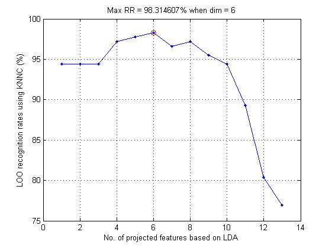
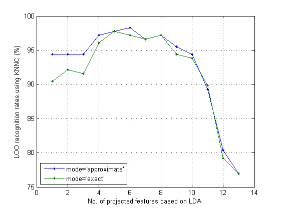
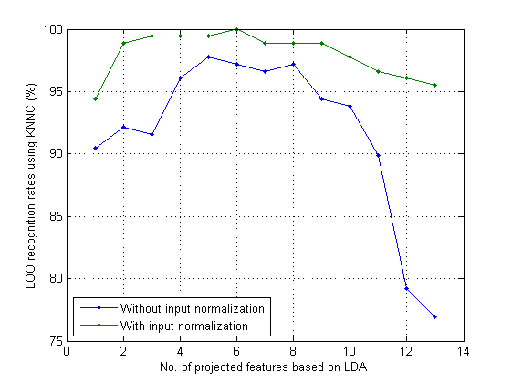

ldaPerfViaKnncLoo
LDA recognition rate via KNNC and LOO performance index
Contents
Syntax
- recogRate=ldaPerfViaKnncLoo(DS)
- recogRate=ldaPerfViaKnncLoo(DS, opt)
- recogRate=ldaPerfViaKnncLoo(DS, opt, plotOpt)
- [recogRate, bestFeaNum, computedClass]=ldaPerfViaKnncLoo(...);
Description
recogRate=ldaPerfViaKnncLoo(DS) return the leave-one-out recognition rate of KNNC on the dataset DS after dimension reduction using LDA (linear discriminant analysis)
- DS: the dataset
recogRate=ldaPerfViaKnncLoo(DS, opt) uses LDA with the option opt:
- opt.maxDim: Use this value as the max. dimensions after LDA projection
- opt.mode:
- 'approximate' (default) for approximate evaluation which uses all dataset for LDA project
- 'exact' for true leave-one-out test, which takes longer
The default value of option can be obtained by ldaPerfViaKnncLoo('defaultOpt').
recogRate=ldaPerfViaKnncLoo(DS, opt, 1) plots the recognition rates w.r.t. dimensions after LDA transformation.
Example
Using LDA over WINE dataset
DS=prData('wine'); opt=ldaPerfViaKnncLoo('defaultOpt'); opt.mode='approximate'; recogRate1=ldaPerfViaKnncLoo(DS, opt, 1);
LOO recog. rate of KNNC using 1 dim = 168/178 = 94.382% LOO recog. rate of KNNC using 2 dim = 168/178 = 94.382% LOO recog. rate of KNNC using 3 dim = 168/178 = 94.382% LOO recog. rate of KNNC using 4 dim = 173/178 = 97.191% LOO recog. rate of KNNC using 5 dim = 174/178 = 97.7528% LOO recog. rate of KNNC using 6 dim = 175/178 = 98.3146% LOO recog. rate of KNNC using 7 dim = 172/178 = 96.6292% LOO recog. rate of KNNC using 8 dim = 173/178 = 97.191% LOO recog. rate of KNNC using 9 dim = 170/178 = 95.5056% LOO recog. rate of KNNC using 10 dim = 168/178 = 94.382% LOO recog. rate of KNNC using 11 dim = 159/178 = 89.3258% LOO recog. rate of KNNC using 12 dim = 143/178 = 80.3371% LOO recog. rate of KNNC using 13 dim = 137/178 = 76.9663%
Compare two mode of LDA performance evaluation via KNNC-LOO
DS=prData('wine'); opt=ldaPerfViaKnncLoo('defaultOpt'); opt.mode='approximate'; tic; recogRate1=ldaPerfViaKnncLoo(DS, opt); time1=toc; opt.mode='exact'; tic; recogRate2=ldaPerfViaKnncLoo(DS, opt); time2=toc; plot(1:length(recogRate1), 100*recogRate1, '.-', 1:length(recogRate2), 100*recogRate2, '.-'); grid on xlabel('No. of projected features based on LDA'); ylabel('LOO recognition rates using KNNC (%)'); legend('mode=''approximate''', 'mode=''exact''', 'location', 'southwest'); fprintf('time1=%g sec, time2=%g sec\n', time1, time2);
time1=0.541564 sec, time2=0.860843 sec
Effect of input normalization of LDA over WINE dataset
DS=prData('wine'); recogRate1=ldaPerfViaKnncLoo(DS, opt); DS.input=inputNormalize(DS.input); recogRate2=ldaPerfViaKnncLoo(DS); plot(1:length(recogRate1), 100*recogRate1, '.-', 1:length(recogRate2), 100*recogRate2, '.-'); grid on xlabel('No. of projected features based on LDA'); ylabel('LOO recognition rates using KNNC (%)'); legend('Without input normalization', 'With input normalization', 'location', 'southwest');
See Also
lda.